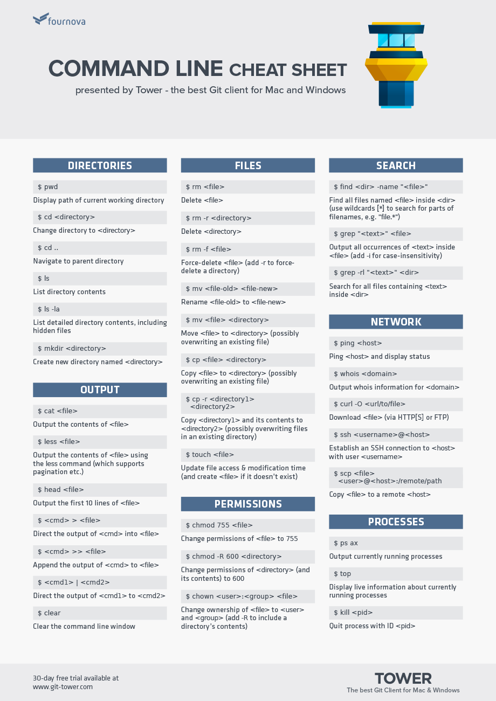

TASK
In your reflection file, answer the following questions:
How would you describe the command line in plain English in a couple of sentences? A word driven finder
that is faster when you can get the hang of it. Reduces the amount of visual sifting required when using finder
and side clicking tasks.
Can you think of an analogy for it? Managing the computers tasks in a birds eye view, instead of being the
minion carrying out each find and commit job, or perhaps having the camera in manual mode instead of auto (even
thoughy most people find in more intuitive).
Did you stick to the timebox guidelines? If not, what change would you make next time? I think I did though
not particularly intentionally, as pressure to learn 'on time' doesnt help me learn at all, so I see how long is
expected then go with the flow around that general suggestion.
Name five commands you used and what they do.
cd, change directory(jump into a folder)
cd .. go back out (or up) as they say, from where you are or what folder you are in.
ls: List the contents of the directory you are currently in.
mv: move or rename the directory of your specification.
pwd: Lets you know where you are located in the Terminal.
Did you learn anything unexpected? That there isnt as much weirdness and commands to learn here as I
thought, and that sudo is very useful to prove to my machine that I am the boss. Also so amny many many failures
to troubleshoot when installing things and therefore commands not working oml how does anyone do this alone.
cd .. go back out (or up) as they say, from where you are or what folder you are in.
ls: List the contents of the directory you are currently in.
mv: move or rename the directory of your specification.
pwd: Lets you know where you are located in the Terminal.
|  |  |
|---|